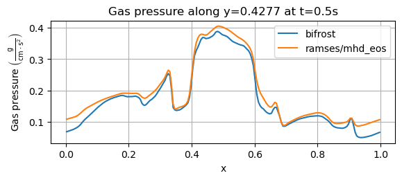
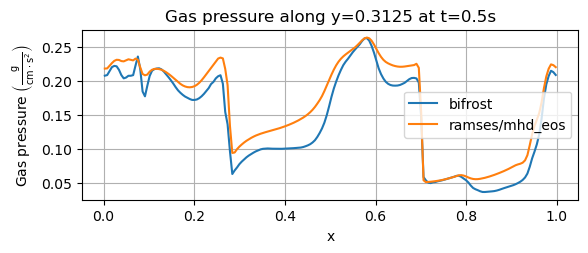
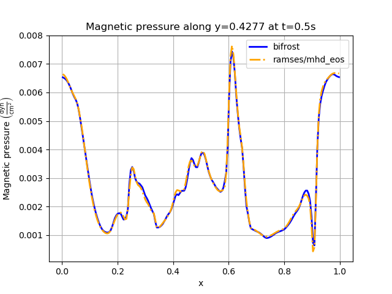

Orszag-Tang vortex¶
- Here we will report the results of the Orszag-Tang experiment. The simulations were performed with the
Branch: Develop
Hash: 5e8f853
OMP_NUM_THREADS=4
Simulation parameters¶
We will now report the parameters used for the simulation. For the dimensions of the simulation environment we will only report the quantities in the xy-direction, but the other two planes are configured with similar parameters, but the actual number are permutated.
Initial conditions¶
For the xy-plane we have
cartesian_params |
||||
|---|---|---|---|---|
size |
dims |
mpi_dims |
origin |
periodic |
1,1,0.005 |
6,6,1 |
2,2,1 |
0,0,0 |
t,t,t |
patch_params |
||||
|---|---|---|---|---|
nt |
n |
no_mans_land |
do_check_nan |
grace |
5 |
32,32,1 |
t |
t |
0.1 |
IC_params |
|---|
idirect |
3 |
For the xz-plane the simulation was run by interchanging the second and third value of size, dims, mpi_dims and n, while the yz-plane was simulated by interchanging the first and thrid value of the same parameters. For the xz-plane we used idirect=2 for the IC_params, while idirect=1 corresponded to the yz-plane.
Solver parameters¶
- For the gas, we used a gamma-law equation of state with
gamma=5/3
Bifrost parameters¶
For the bifrost solver we used
bifrost_params |
|||||
|---|---|---|---|---|---|
Ca |
U |
Uv |
d |
e |
E |
0.03 |
0.1 |
0.1 |
0.05 |
0.30 |
0.3 |
stagger_params |
|||||
|---|---|---|---|---|---|
cs |
pa |
ofd |
mas |
kap |
eta |
0.10 |
1.0 |
1.0 |
0.0 |
1.0 |
1.0 |
Ramses parameters¶
- For the ramses solver, we used
slope_type=3.5
Bifrost results 2D¶
Here we will show the results of the experiment compiled with the bifrost solver. There are four quantities we will report for three different planes, namely density, energy, velocity magnitude and magnetic pressure.
We will plot the final states of the different quantities in all three directions. We will also include a plot of the initial state at t=0s for the xy-direction only. The plot at t=0s for the xy plane will be shown in the upper left panel, while the upper right panel shows the plot in the xy-plane after t=0.5s. The lower left and lower bottom corresponds to the xz-plane and yz-plane at t=0.5s respectively.

Ramses results 2D¶
We will now report the results obtained compiled with the ramses/mhd_eos solver, where we plot the same quantities as we did for the bifrost solver.
The plots are the same as we did with bifrost, where each quantity is shown for the xy-plane, xz-plane and yz-plane. For the xy-plane we will include the result at t=0s, but for all three directions we will report the result after t=0.5s. Similarly to the bifrost plots, the upper left and upper right plots corresponds to the xy-plane at t=0s and t=0.5s repsectively. The lower left and lower right plots correspond to the xz-plane and yz-plane, respectively.

{kind=link}
{kind=link}
{kind=link}
{kind=link}
{kind=link}
{kind=link}
{kind=link}
{kind=link}
{kind=link}
{kind=link}
{kind=link}
{kind=link}
{kind=link}
{kind=link}
{kind=link}
{kind=link}
{kind=link}
{kind=link}
{kind=link}
{kind=link}
{kind=link}
{kind=link}
{kind=link}
{kind=link}
{kind=link}
{kind=link}
{kind=link}
{kind=link}
{kind=link}
{kind=link}
1D pressure line profiles¶
We will now report the results of the gas pressure and magnetic pressure along the x-axis for the xy-plane.
Gas pressure¶
We start with the gas pressure, derived from the gamma law equation of state, taken at t=0.5s at y=0.4277. The results from the bifrost solver and the ramses/mhd_eos solver is shown in the plot below.
For the above image, we get an overall profile for both solvers, matching the one from Miniati & Martin (2011). Their simulation was performed with a grid of 200x200 cells. For the bifrost solver, the maximum gas pressure lies below 0.4 g/(cm*s^2), matching the result of Miniati & Martin. Their simulation also has P<0.1 at the boundaries where x=0 and x=1, similar to the bifrost solver. The shape of their resulting pressure at 0.9 < x < 1 looks more or less identical to the one obtained with the bifrost solver.
We also compare the above result to Ryu et. al. (1998), which used the same y-value of y=0.4277, a grid of 256x256 cells and an output time of t=0.48s. In that experiment, the pressure had a slightly higher local maximum near x=0.2 and a less fluctuating profile near this point. The sudden increase in pressure before x reaches 0.4 that we see above does not occur in the result of Ryu et. al. (1998) before x reaches approximately x=0.44. Their overall maximum pressure value is slighlty larger than P=0.4, and resembles the shape we obtained from the ramses/mhd_eos solver. For x>0.9 Ryu et. al. lies below P=0.1 and reaches a final value of P=0.8.
As a final comparison, we consider the result from Stone et. al. (2008) where a 192x192 computational grid was used with a final time of t=0.5, both used for the above image as well. Their results were obtained with a slice along y=0.427. The pressure obtained by Stone et. al. starts below P=0.1, and reaches P=0.2 approximately around x=0.3. The steep pressure increase near x=0.4 above seems to occur almost exactly at x=0.4 in Stone et. al., which is at a slightly higher x-value than we have. The maximum pressure value they reach seems to be just below P=0.4. The small peak near x=0.9 lies above P=0.1 in Stone et. al. and approaches a final value in the range P= 0.07-0.08.
Now, for y=0.3125
Magnetic pressure¶
For the magnetic pressure, we will only consider a slice along y=0.4277, shown below
References¶
Miniati & Martin (2011) - https://iopscience.iop.org/article/10.1088/0067-0049/195/1/5/pdf Ryu et. al. (1998) - https://iopscience.iop.org/article/10.1086/306481/pdf Stone et. al. (2008) - https://iopscience.iop.org/article/10.1086/588755/pdf